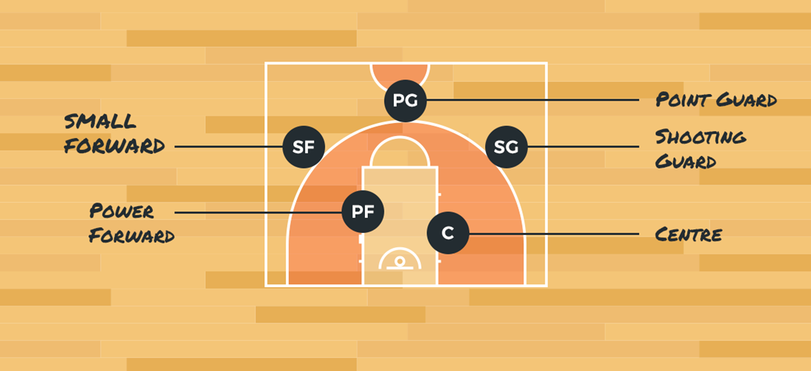

BASKETBALL
About the game

Deffinition
Basketball is a team sport in which two teams, most commonly of five players each, opposing one another on a rectangular court, compete with the primary objective of shooting a basketball (approximately 9.4 inches (24 cm) in diameter) through the defender's hoop (a basket 18 inches (46 cm) in diameter mounted 10 feet (3.048 m) high to a backboard at each end of the court) while preventing the opposing team from shooting through their own hoop. A field goal is worth two points, unless made from behind the three-point line, when it is worth three. After a foul, timed play stops and the player fouled or designated to shoot a technical foul is given one or more one-point free throws. The team with the most points at the end of the game wins, but if regulation play expires with the score tied, an additional period of play (overtime) is mandated. Players advance the ball by bouncing it while walking or running (dribbling) or by passing it to a teammate, both of which require considerable skill. On offense, players may use a variety of shots—the lay-up, the jump shot, or a dunk; on defense, they may steal the ball from a dribbler, intercept passes, or block shots; either offense or defense may collect a rebound, that is, a missed shot that bounces from rim or backboard. It is a violation to lift or drag one's pivot foot without dribbling the ball, to carry it, or to hold the ball with both hands then resume dribbling. The five players on each side at a time fall into five playing positions: the tallest player is usually the center, the tallest and strongest is the power forward, a slightly shorter but more agile big man is the small forward, and the shortest players or the best ball handlers are the shooting guard and the point guard, who implements the coach's game plan by managing the execution of offensive and defensive plays (player positioning). Informally, players may play three-on-three, two-on-two, and one-on-one.
Player Positions
Center. Centers are generally your tallest players. They generally are positioned near the basket.
Offensive. The center's goal is to get open for a pass and to shoot. They are also responsible for blocking defenders, known as picking or screening, to open other players up for driving to the basket for a goal. Centers are expected to get some offensive rebounds and put-backs.
Defensive. On defense, the center's main responsibility is to keep opponents from shooting by blocking shots and passes in the key area. They also are expected to get a lot of rebounds because they're taller.
Forward. Your next tallest players will most likely be your forwards. While a forward may be called upon to play under the hoop, they may also be required to operate in the wings and corner areas.
Offensive. Forwards are responsible to get free for a pass, take outside shots, drive for goals, and rebound.
Defensive. Responsibilities include preventing drives to the goal and rebounding.
Guard. These are potentially your shortest players and they should be really good at dribbling fast, seeing the court, and passing. It is their job to bring the ball down the court and set up offensive plays.
Offensive. Dribbling, passing, and setting up offensive plays are a guard's main responsibilities. They also need to be able to drive to the basket and to shoot from the perimeter.
Defensive. On defense, a guard is responsible for stealing passes, contesting shots, preventing drives to the hoop, and for boxing out.
